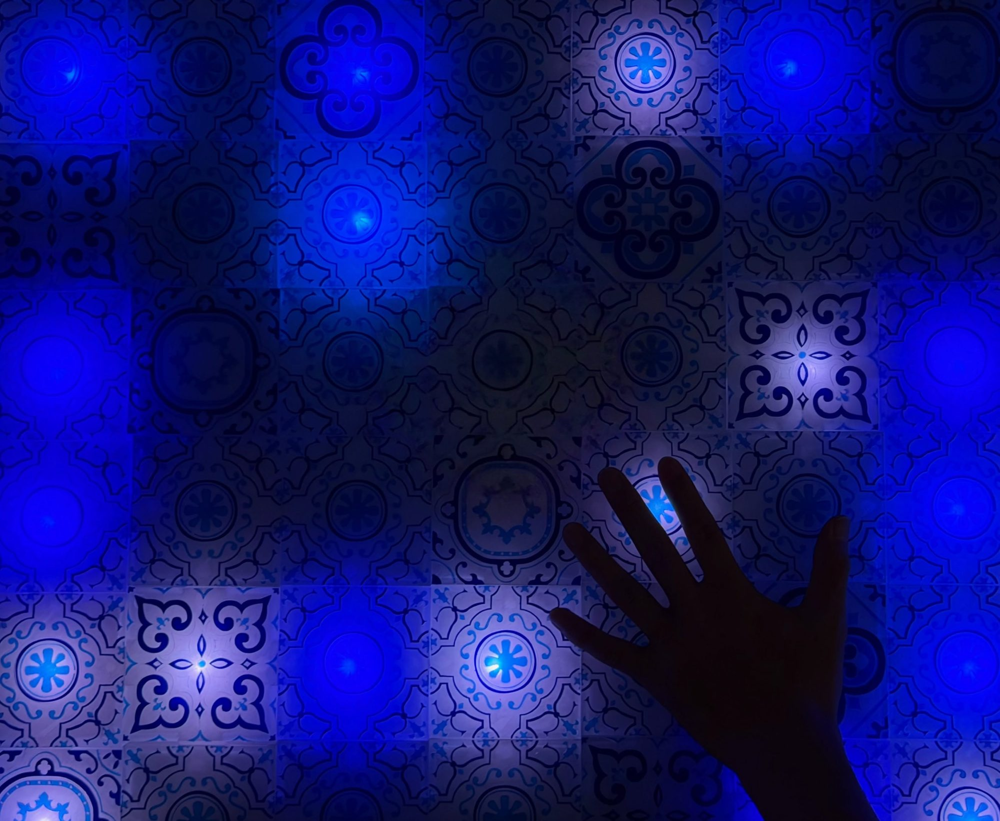
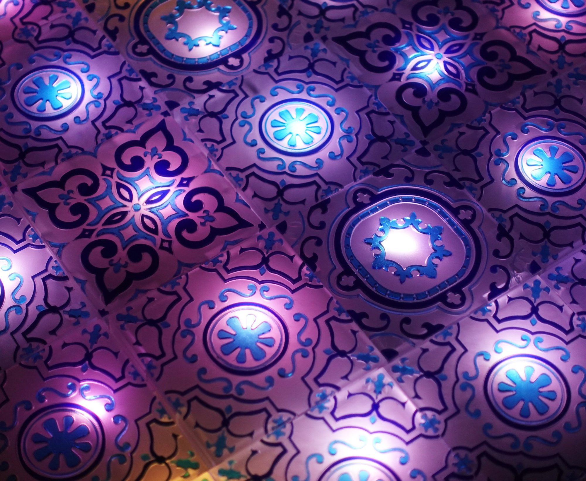
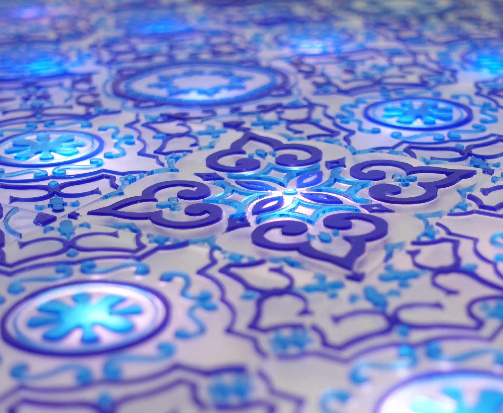
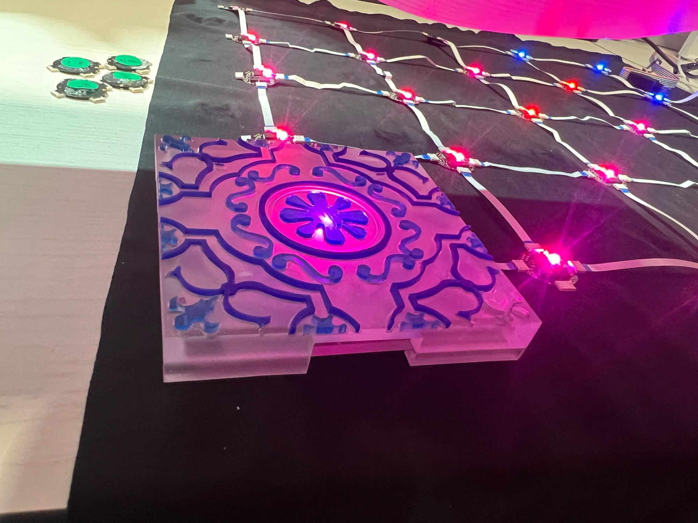
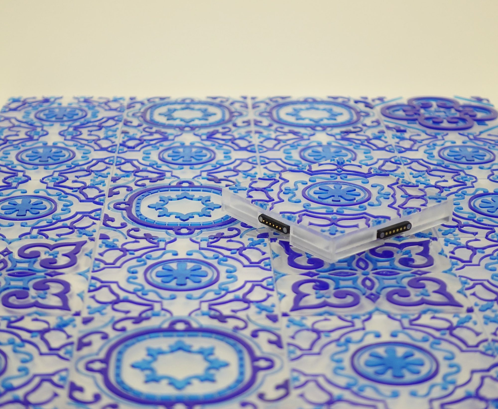
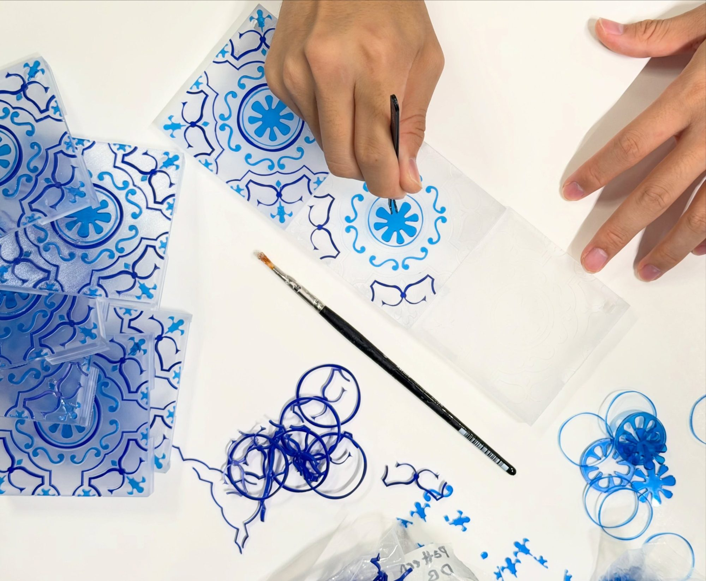
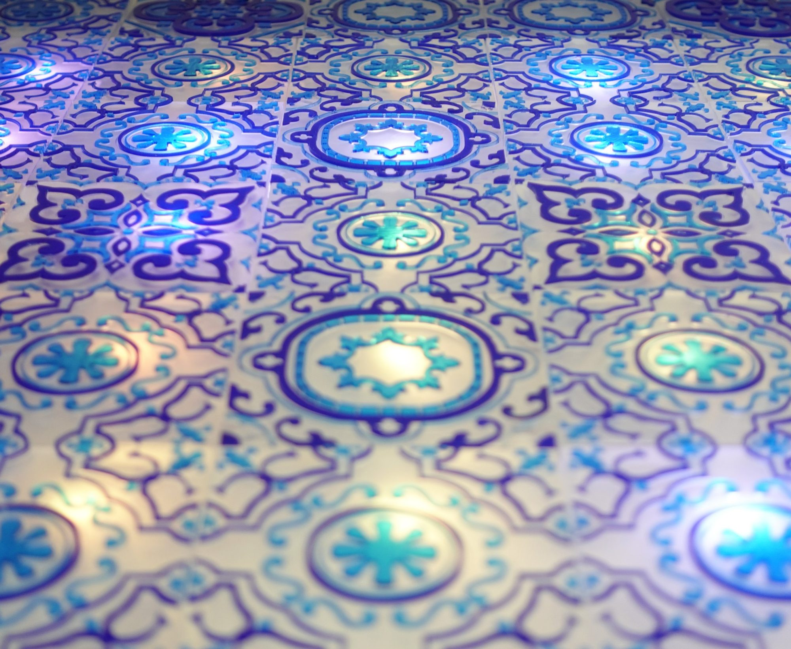
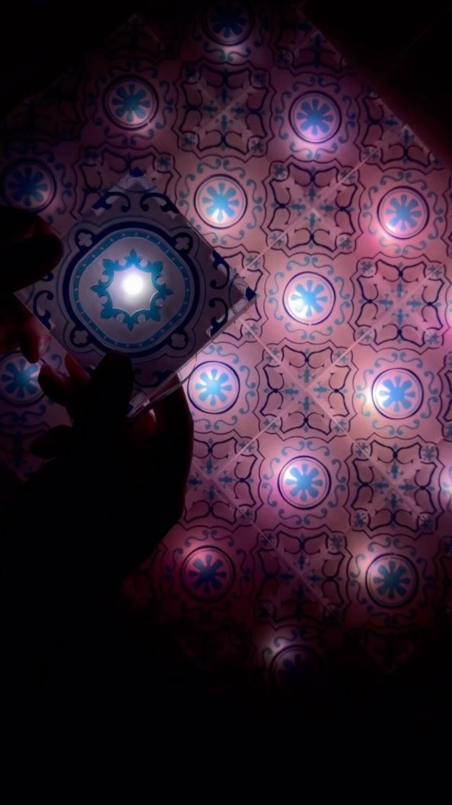
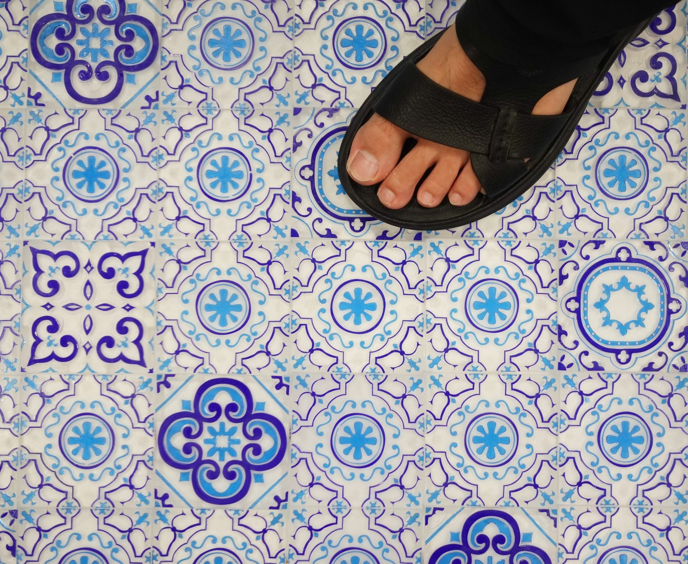

PeraNETs
Peranakan-Inspired Architectural Tiles as Modular Interfaces
PeraNETs reimagines heritage ornament as a system of interactive, computational tiles. Each tile operates as part of a modular network, sensing gestures and environmental changes while exchanging information with its neighbors.
Across larger surfaces, static motifs become a connected system, shifting, responding, and evolving through interaction, behaviour, and context to create architecture and surfaces that can perceive, communicate, and change with the people and environments around them.








